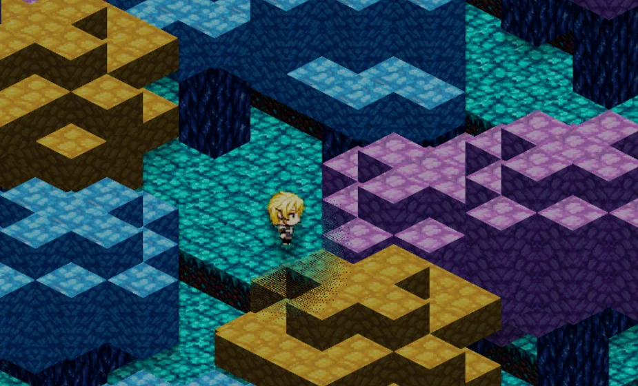
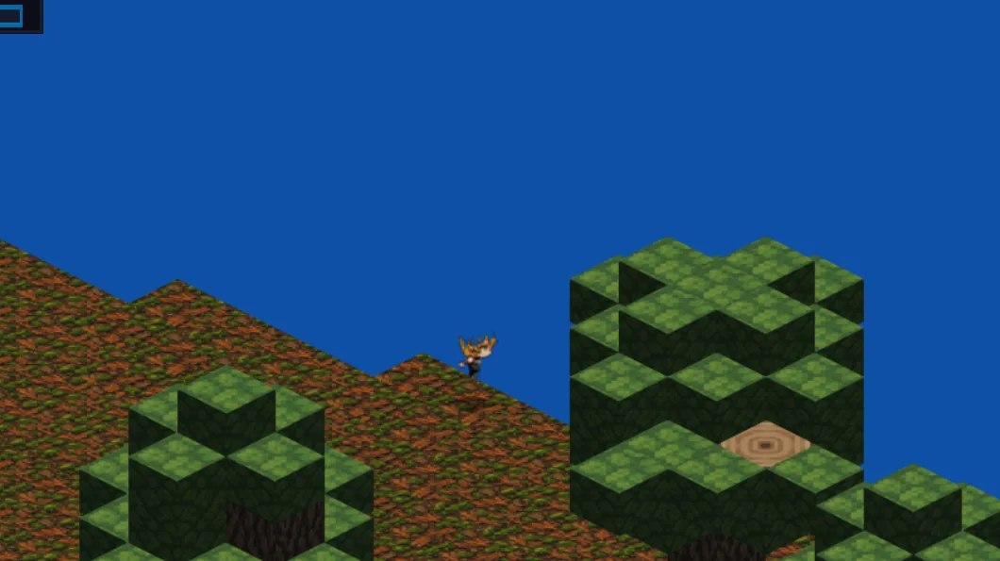

Explora
Explore
Descubre costas, bosques, montañas y territorios con características propias, nacidos de la semilla del mundo.
Discover coastlines, forests, mountains and distinctive regions created from the world's seed.
Creamos experiencias donde cada territorio es una posibilidad. Mundos generados mediante sistemas, exploración libre y una ambición: que lo inesperado se sienta natural.
We create experiences where every landscape holds possibility. System-driven worlds, open exploration, and one ambition: making the unexpected feel natural.

Estamos desarrollando un RPG sandbox 2D de fantasía y mundo abierto, con exploración, terreno modificable y sistemas interconectados que buscan dar sentido a cada decisión.
We're developing an open-world 2D fantasy sandbox RPG built around exploration, editable terrain, and connected systems designed to make every decision meaningful.
El mundo no se diseña habitación por habitación. Su geografía nace de reglas de terreno, clima, agua, geología y ecología. Sobre esa base investigamos la interacción con recursos, la fabricación de objetos, la progresión de oficios, las criaturas y las sociedades. No se trata de una campaña lineal: la idea es que el entorno se convierta en parte de la historia que crea cada jugador.
The world isn't assembled room by room. Its geography emerges from terrain rules, climate, water, geology and ecology. That foundation supports our work on resources, crafting, role progression, creatures and societies. The goal isn't a fixed linear campaign: it's an environment that becomes part of the story each player creates.

Estamos creando un RPG sandbox 2D de mundo abierto. El terreno, los biomas, las cuevas y los recursos proceden de sistemas de generación conectados. En vez de limitarse a completar niveles en orden, la intención es que puedas explorar, conseguir materiales, transformar el entorno, desarrollar habilidades y elegir tus objetivos.
We're creating an open-world 2D sandbox RPG. Terrain, biomes, caves and resources come from connected generation systems. Rather than completing levels in a prescribed order, the goal is to let you explore, gather materials, shape the environment, develop skills and choose your objectives.
Su identidad visual es pixel art 2D con perspectiva elevada o de tres cuartos. No es un juego 3D ni busca una estética de cubos. La altura, las cavernas y las islas flotantes forman parte del mismo universo mediante capas y niveles lógicos.
Its visual identity is 2D pixel art with a raised or three-quarter perspective. It isn't a 3D game or a block-style world. Elevation, caverns and floating islands belong to the same universe through logical height and depth layers.
La idea principal: un sandbox libre primero. Las misiones pueden complementar la aventura; una campaña de historia y el multijugador a gran escala quedan para fases futuras.
The core idea: a free-form sandbox first. Quests may complement the journey; a story campaign and large-scale multiplayer belong to later stages.
La experiencia se concibe como un ciclo que genera nuevas decisiones, no como una lista interminable de tareas obligatorias.
The experience is designed as a cycle that creates new choices, not an endless list of mandatory daily tasks.
Descubre costas, bosques, montañas y territorios con características propias, nacidos de la semilla del mundo.
Discover coastlines, forests, mountains and distinctive regions created from the world's seed.
Encuentra materiales en el entorno. La minería y la excavación te permiten investigar lo que hay debajo de la superficie.
Find materials in the environment. Mining and excavation let you investigate what lies below the surface.
Usa esos materiales para fabricar, construir, cultivar o comerciar, según el oficio que quieras desarrollar.
Use those materials to craft, build, farm or trade, according to the role you want to develop.
Mejora equipo, habilidades y conocimientos. La propuesta evita encerrarte de forma irreversible en una profesión.
Improve your equipment, skills and knowledge. The design avoids locking you permanently into one profession.
Una cueva desconocida, un proyecto de construcción o una ruta comercial pueden convertirse en el siguiente objetivo.
A new cave, a construction project or a trade route can become your next objective.
Este ciclo describe la visión recogida en las notas de diseño. No todas las actividades están conectadas todavía en una experiencia jugable completa.
This loop describes the vision in the design notes. Not every activity is integrated into a complete playable experience yet.
Estos ejemplos ilustran la libertad que buscamos. Son situaciones hipotéticas del diseño, no misiones ni funciones finales ya disponibles.
These examples illustrate the freedom we're pursuing. They are hypothetical design scenarios, not finished quests or currently available features.
Sale de una aldea, sigue las montañas, descubre un acceso a una cueva y encuentra una ruina por una entrada inesperada. El propio paisaje guía el descubrimiento.
Leave a settlement, follow a mountain ridge, find a cave and discover ruins through an unexpected opening. The landscape itself guides discovery.
Recolecta minerales, aprende herrería y cultiva. Su aventura puede girar alrededor de producir mejores objetos e intercambiar recursos, no solo combatir.
Gather ore, develop smithing skills and grow crops. Your journey can revolve around making better items and exchanging resources, not only combat.
Practica combate o magia, se prepara para regiones peligrosas y busca antiguos lugares ocultos. También puede aprender otra disciplina más adelante.
Practice combat or magic, prepare for dangerous regions and search for ancient hidden places. You can also pursue another discipline later.
La altura, el subsuelo y las regiones especiales forman parte del mundo principal; no son escenarios independientes que ignoran su entorno.
Elevation, the underground and special regions belong to the main world; they aren't disconnected environments that ignore their surroundings.
El generador incluye islas con volumen, cavernas internas y hábitats potenciales de dragones. La IA de los dragones, sus combates y los jefes son objetivos todavía por desarrollar.
The generator includes volumetric islands, internal caverns and potential dragon habitats. Live dragon AI, combat and boss encounters remain development goals.
El clima, el relieve, el agua y la geología influyen en los biomas y los lugares donde aparecen estructuras. La geografía tiene una lógica compartida.
Climate, terrain, water and geology help determine biomes and where structures belong. The geography follows shared rules.
La topología de cuevas y mazmorras permite plantear accesos naturales o mediante excavación. Los enemigos, tesoros y recorridos jugables completos aún requieren integración.
Cave and dungeon topology supports natural access or player-made digging routes. Enemies, loot and complete playable encounters still require integration.
No buscamos simplemente un mapa enorme. Buscamos que el lugar donde estás influya en lo que encuentras y en las decisiones que puedes tomar.
We're not simply pursuing a huge map. We want where you are to influence what you find and what you can choose to do.
La generación no consiste en colocar elementos al azar. Cada sistema aporta información al siguiente.
Generation isn't about placing random things. Each system informs the next.
Una semilla y las reglas de generación producen el relieve. El clima, la cercanía del agua y la geología influyen en la distribución de biomas y recursos. El mundo se divide en regiones que se generan, preparan y muestran alrededor del jugador para no cargar todo el territorio a la vez. Cuando se modifica una zona, el sistema de persistencia está diseñado para conservar los cambios.
A seed and generation rules shape the terrain. Climate, water proximity and geology influence biomes and resources. The world is split into chunks, generated and displayed near the player instead of loading everything at once. When an area changes, the persistence system is designed to preserve those edits.
Relieve, alturas, costas, capas subterráneas y formaciones se construyen desde reglas compartidas. Las zonas no son postales desconectadas.
Relief, elevation, shores, underground layers and formations emerge from shared rules—not isolated postcards.
Temperatura, lluvia, humedad, agua y altitud ayudan a decidir si una región es bosque, desierto, pantano, tundra o terreno especial.
Temperature, rainfall, moisture, water and altitude help define forests, deserts, wetlands, tundra and special terrain.
Los chunks se preparan por etapas y se intercambian a medida que el personaje se mueve; el rendimiento y la continuidad visual aún se están afinando.
Chunks are prepared in stages as the character moves; performance and visual continuity are still being refined.
El sistema de guardado contempla personaje, inventario, progreso, contenedores, modificaciones del terreno y estado del mundo. Sigue en validación integral.
The save system covers the player, inventory, progress, containers, terrain edits and world state. Full end-to-end validation continues.
Punto de partida reproducible
Repeatable starting point
Alturas y geología
Elevation & geology
Humedad y temperatura
Moisture & temperature
Ríos, lagos e influencia hídrica
Rivers, lakes & water influence
Paisajes y recursos
Landscapes & resources
Cargar, interactuar y guardar
Load, interact & save
La arquitectura del proyecto va más allá del terreno. Estos son los pilares que se están prototipando o investigando; su presencia en código o diseño no significa que todos formen ya una experiencia jugable completa.
The project architecture reaches beyond terrain. These are systems being prototyped or researched; code and design documents do not mean every feature already forms a complete playable experience.
Terreno volumétrico, excavación y cambios que interactúan con el sistema de generación y guardado.
Volumetric terrain, excavation and edits linked to world generation and persistence.
Sistema técnico en prototipoTechnical system in prototypeMateriales, herramientas, herrería, calidad de fabricación y reparación con reglas de consumo concretas.
Materials, tools, smithing, crafting quality and repairs governed by resource rules.
Servicios en implementaciónSystems under implementationAtributos, resistencia, defensa, estados alterados, proyectiles y habilidades mágicas en desarrollo.
Attributes, stamina, defense, status effects, projectiles and magical abilities in development.
Mecánicas en desarrolloMechanics in developmentProgresión por actividades y profesiones como herrero, agricultor, comerciante y líder.
Activity-based progression and roles such as blacksmith, farmer, merchant and leader.
Contratos de lógica en prototipoPrototype logic contractsFauna, hábitats y una visión de criaturas con necesidades, comportamientos, entrenamiento y vínculos.
Wildlife, habitats and a vision of creatures with needs, behaviors, training and bonds.
Ecosistema y diseño en evoluciónEcosystem and design evolvingArquitectura de asentamientos, economía, relaciones, grupos y personajes con roles diferenciados.
Architecture for settlements, economy, relationships, organizations and role-driven characters.
Simulación en integraciónSimulation in integrationImágenes existentes del prototipo, no promesas gráficas. Pulsa una captura para verla ampliada.
Existing prototype imagery, not a promise of final visuals. Select any image to enlarge.
* Capturas del trabajo en desarrollo. El arte final, la interfaz, los contenidos, el rendimiento y las mecánicas pueden cambiar. Las fotografías del prototipo no equivalen a una versión comercial terminada.
* Development screenshots. Final art, interface, content, performance and mechanics may change. Prototype captures do not represent a finished commercial release.
Hay compilaciones ejecutables, módulos de juego y pruebas automatizadas. La integración y el rendimiento todavía se están resolviendo. Por ahora no anunciamos fecha de lanzamiento ni acceso público al juego.
Executable builds, gameplay modules and automated tests exist. Integration and performance are still being worked on. There is no announced release date or public game access yet.
Construcción del terreno, regiones, biomas, renderizado y sistemas de datos. Hay pruebas de compilación y recorridos automatizados.
Terrain, chunks, biomes, rendering and data systems. Build checks and automated movement probes exist.
Se trabaja en la carga al desplazarse, la continuidad visual, la fluidez de cuadros y las pruebas reales de guardado e interacción.
Work focuses on streaming during movement, visual continuity, frame pacing and real save/interaction testing.
Integrar bucles jugables, pulir gráficos, equilibrar sistemas y verificar el conjunto antes de comunicar una fecha.
Integrate complete gameplay loops, polish visuals, balance systems and validate the whole experience before announcing a date.
Queremos explicar el proyecto con la misma claridad con la que lo desarrollamos.
We want to describe the project as clearly as we develop it.
Estas respuestas reflejan las notas de diseño y el estado técnico del prototipo. Una intención creativa no debe confundirse con algo que ya está disponible.
These answers reflect the design notes and the technical state of the prototype. A creative goal should never be mistaken for something already available.
Un RPG sandbox 2D de mundo abierto, con generación procedural, exploración, excavación, fabricación y progresión. La visión combina la libertad del sandbox con sistemas de fantasía y rol.
An open-world 2D sandbox RPG with procedural generation, exploration, excavation, crafting and progression. The vision combines sandbox freedom with fantasy role-playing systems.
No. La dirección artística es pixel art 2D con perspectiva elevada o de tres cuartos. Aunque el mundo modele altura y profundidad, no busca ser 3D ni imitar visualmente un universo de cubos.
No. The art direction is 2D pixel art from a raised or three-quarter perspective. Even though the world models height and depth, it isn't intended as a 3D game or a block-style world.
La prioridad es el modo sandbox, donde cada jugador crea sus objetivos. El diseño contempla misiones opcionales y una campaña de historia para una etapa futura, sobre los mismos sistemas.
The priority is sandbox mode, where players choose their goals. The design includes optional quests and a possible story campaign at a later stage, using the same underlying systems.
La intención es evitar las clases irreversibles. El diseño de progresión permite trabajar distintas disciplinas y combinar habilidades; su integración y equilibrio completos continúan en desarrollo.
The goal is to avoid irreversible class choices. The progression design explores multiple disciplines and skill combinations; full integration and balancing are still being developed.
No. Existen módulos de simulación, generación de hábitats, sistemas de facciones e investigación de criaturas, pero no equivalen todavía a una experiencia final con toda la IA, los jefes y las misiones integrados.
No. Simulation modules, habitat generation, faction systems and creature research exist, but they do not yet amount to finished gameplay with complete AI, bosses and quests integrated.
La visión a largo plazo contempla multijugador e incluso servidores regionales. La etapa inicial se centra en una base para un jugador; no estamos anunciando un MMO ni servidores jugables hoy.
The long-term vision considers multiplayer and possibly regional servers. The initial stage focuses on a single-player foundation; we're not announcing a playable MMO or active servers today.
El objetivo de diseño contempla PC y evalúa Android, iOS y otras plataformas. Eso no significa que exista una versión lista para cada dispositivo ni un lanzamiento simultáneo confirmado.
The platform vision includes PC and evaluates Android, iOS and possibly other devices. That doesn't mean there is already a ready-to-play build for each platform or a confirmed simultaneous release.
Existen compilaciones y pruebas técnicas, pero no se ha anunciado una versión pública ni una fecha de lanzamiento. Antes deben consolidarse el rendimiento, la carga de regiones y los sistemas completos de juego.
Executable builds and technical tests exist, but there is no announced public download or release date. Performance, region streaming and complete gameplay systems must be validated first.
Somos un estudio independiente que explora lo que ocurre cuando el diseño, la tecnología y la imaginación trabajan juntos.
We're an independent studio exploring what happens when design, technology and imagination work together.
The Fiven Or Community —TFOC— es la identidad detrás de nuestros proyectos. Nuestro trabajo combina desarrollo de videojuegos, programación de sistemas, diseño procedural, pruebas y experimentación visual. Construimos prototipos reales, estudiamos sus límites y volvemos a intentarlo hasta que las piezas encajan. Queremos crear experiencias con carácter propio, sin depender de fórmulas prefabricadas.
The Fiven Or Community—TFOC—is the identity behind our projects. Our work combines game development, systems programming, procedural design, testing and visual experimentation. We build real prototypes, study their limits and iterate until the pieces fit. Our goal is to create experiences with a character of their own—not rely on ready-made formulas.
Colaboraciones, consultas profesionales e ideas. Escríbenos y conversemos.
Collaborations, professional inquiries and ideas. Reach out and start a conversation.